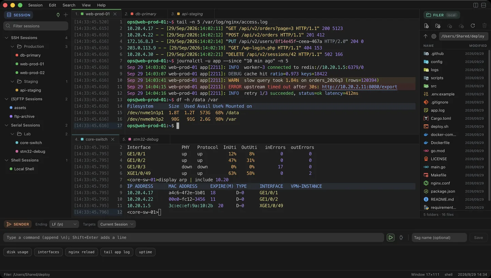
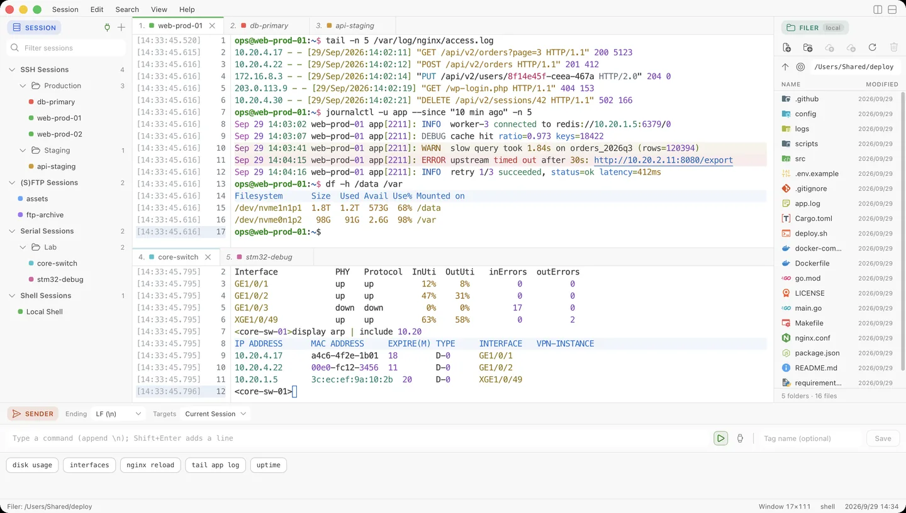

From cloud to edge — one terminal for everything 从云端到边缘，一个终端连接一切
Terminal, SSH, FTP and serial in one native client, built with Rust + Tauri v2 and a React + xterm.js frontend. The entire SSH stack is pure Rust (russh) — no libssh2, no OpenSSL, no pkg-config. 终端、SSH、FTP 与串口集于一个原生客户端，基于 Rust + Tauri v2 与 React + xterm.js 前端构建。SSH 协议栈由纯 Rust（russh）实现，不依赖 libssh2、OpenSSL 或 pkg-config。
Free and open source · GPL-3.0 · No account, no telemetry 免费开源 · GPL-3.0 · 无需账号、无遥测
Windows x64 · macOS Apple Silicon · Linux x64 / ARM64
This fork currently publishes Windows x64 installers and portable archives, with manual updates. macOS/Linux links below lead to the separate upstream distribution. 本分支目前发布 Windows x64 安装包和便携包，采用手动升级。下方 macOS/Linux 链接指向功能不同的上游发行版。
x64 · installer .exe
or portable .zip
Apple Silicon · .dmg
x64 / ARM64 · .AppImage / .deb / .rpm
Windows downloads come from this fork. The macOS/Linux packages listed below belong to upstream and have a different feature set: Windows 下载来自本分支。下列 macOS/Linux 包属于上游发行版，功能与本分支不同：
EdgeTerm_<version>_x64-setup.exe — Windows installer (recommended).EdgeTerm_<version>_x64-setup.exe —— Windows 安装程序（推荐）。EdgeTerm_<version>_x64-portable.zip — Windows portable build; unzip anywhere, data stays in its data folder (saved passwords last for the session only).EdgeTerm_<version>_x64-portable.zip —— Windows 便携版，解压即用，数据保存在旁边的 data 文件夹（保存的密码仅在本次运行有效）。EdgeTerm_<version>_aarch64.dmg — macOS on Apple Silicon.EdgeTerm_<version>_aarch64.dmg —— Apple Silicon 上的 macOS。EdgeTerm_<version>_amd64.AppImage, …_amd64.deb, …_x86_64.rpm — Linux, with matching aarch64 / arm64 builds.EdgeTerm_<version>_amd64.AppImage、…_amd64.deb、…_x86_64.rpm —— Linux；ARM 平台对应 aarch64 / arm64 版本。Before you install: Windows needs the Microsoft WebView2 runtime, which ships with Windows 11 and with a current Microsoft Edge on Windows 10. Because the installers are not code-signed yet, Windows SmartScreen and macOS Gatekeeper will warn on first launch — the tutorial shows the two clicks to continue. 安装前请知悉：Windows 需要 Microsoft WebView2 运行时（Windows 11 自带；Windows 10 随较新的 Microsoft Edge 提供）。安装包暂未做代码签名，首次启动时 Windows SmartScreen 与 macOS Gatekeeper 会提示风险；教程中写明了继续的两步操作。
After it opens: you get an empty workspace. Press Alt+N (or the New Session button), choose Local Shell for a terminal on this machine, or fill in host and user for SSH. The first successful connection is a shell prompt you can type into — nothing needs an account. 打开之后：会看到一个空工作区。按 Alt+N（或点 New Session），选 Local Shell 得到本机终端；SSH 则填写主机与用户名。首次成功的标志是可以输入命令的 shell 提示符——全程不需要账号。
No account, no subscription, no paid tier. The source is on GitHub under GPL-3.0; that licence, not a separate contract, is what you agree to. 无需账号、无订阅、无付费版。源码以 GPL-3.0 发布；你接受的是这份许可证，而不是另一份单独条款。
No telemetry. Saved passwords never enter the page or sessions.json: they are sealed in credentials.json, with the key held by the OS credential store. This fork does not check for updates automatically. Help → Downloads and Updates opens this fork's releases when requested.
没有遥测。保存的密码不会进入页面或 sessions.json：它们被封存在 credentials.json，密钥由系统凭据库保管。本分支不自动检查更新；“帮助 → 下载与更新”在用户操作后打开本分支发布页。
This distribution is maintained in sonwe1e/EdgeTerm, derived from miskin’s upstream project. Report issues with this fork to its issue tracker. 本发行分支维护于 sonwe1e/EdgeTerm，源自 miskin 的上游项目。本分支问题请到本仓库 Issues反馈。
All builds on the GitHub Releases page. New to EdgeTerm? Start with the tutorial. 全部版本见 GitHub Releases 页面。第一次使用？请从使用教程开始。

